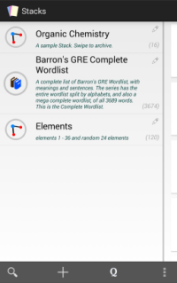

Stacks
Introduction
A collection of Cards. Each stack has an associated icon, title, and
description. An unlimited amount of stacks may be created (or imported), but each one must
have
a unique name. Stacks are flexible - and can represent a subject, topic, category, or
anything
in between. A list of your current Stacks is shown upon entering the app

Actions
 Adding
a new Stack: Tap the "+" icon, and enter the name. Optionally, add a
description and pick an icon. When done, tap "Create Stack"
Adding
a new Stack: Tap the "+" icon, and enter the name. Optionally, add a
description and pick an icon. When done, tap "Create Stack"
 Editing
a Stack: Tap the pencil icon on the Stack that you want to edit. Fill out any
information, and tap "Edit Stack"
Editing
a Stack: Tap the pencil icon on the Stack that you want to edit. Fill out any
information, and tap "Edit Stack"
- Merging Stacks: Select the stacks to merge, and tap the merge
icon
 Archiving a Stack: Simply swipe the stack away to archive
Archiving a Stack: Simply swipe the stack away to archive
- Archiving multiple Stacks: Long press a stack to select, and
select other stacks to archive. Tap the trashcan icon
- Restoring a Stack: Navigate to the overflow menu, select
"Archived
Stacks" and tap the stack to restore
- Deleting a Stack: Swipe the stack away from the Archived
Stacks
window
- Importing a Stack: See Import
Help